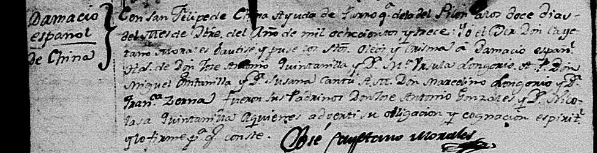

<meta charset="utf-8">
<meta name="viewport" content="width=device-width, initial-scale=1">
<meta name="robots" content="noindex">
<title>Quintanilla: Monterrey 1596</title>
<link rel="stylesheet" href="style.css">

<nav>
  <a href="index.html">Home</a>
  <a class="here" href="quintanilla.html">Quintanilla</a>
  <a href="martinez.html">Martinez</a>
  <a href="flynn.html">Flynn</a>
  <a href="maccoll.html">MacColl</a>
</nav>

<main>
<h1>Quintanilla</h1>
<p class="sub">My mother's father's line, and the deepest reach in the family: proven on records into the 1700s, and on well-worked ground back to the 1596 founding of Monterrey.</p>

<h2>The founding of Monterrey</h2>
<p>On September 20, 1596, a dozen families rode into a valley in northern Mexico and signed a charter founding a city they called Monterrey. Today it's one of the biggest cities in Mexico. The twelve founders' names are written on the charter, and being descended from one of them is a documented, checkable thing, the Mexican equivalent of Mayflower descent.</p>

<p>One of the twelve was <strong>Captain Lucas García</strong> <span class="badge proven">Proven</span>. He's not obscure. The chronicles call him "El Bueno," the good one, and "el Capitán de la Paz," the captain of peace, because he spoke the language of the local Huachichil people and kept the peace with them as the settlement's interpreter. He settled the land that is now the city of Santa Catarina, next door to Monterrey, and served repeatedly as a town official from 1599 until about 1630, when he died. His wife was <strong>Juliana de Quintanilla</strong>, who outlived him by nearly forty years and died in 1667.</p>

<p>Our family tree claimed we descend from this man. That's exactly the kind of claim that usually falls apart when you test it, somebody centuries later saw a matching surname and grafted their line onto a famous one. So we tested it.</p>

<p>It held <span class="badge probable">Probable</span>. Two independent Mexican sources, including a list derived from Israel Cavazos Garza, the dean of Nuevo León genealogy, name the founder couple's ten children. One of them is <strong>Ana</strong>, recorded under both her names, "Ana García" from her father and "Ana de Quintanilla" from her mother, married to Bartolomé González. That's our ancestor, matched on both name forms and the right husband. Not a surname coincidence, an actual documented daughter.</p>

<h2>Why we're called Quintanilla and not García</h2>
<p>Here's the part I find wild: the surname came down through women. Spanish naming in that era was flexible, kids could take the father's name, the mother's, or a grandparent's. Ana used her mother Juliana's name, Quintanilla. Ana's husband was <strong>Bartolomé González de Olivares</strong>, an immigrant from Morón de la Frontera in southern Spain, born about 1615, who arrived in Monterrey around 1645, mined in the Valle de las Salinas, served as mayor of Monterrey in 1648, and died in 1672 <span class="badge probable">Probable</span>. Their children fused the two names into "González de Quintanilla," and over the generations the González fell away. The name survived because a daughter's line carried it.</p>

<p>And there's a twist further back, one I had checked hard, because a "we're secretly Sephardic" story is exactly the kind of thing families romanticize. It knots at Juliana de Quintanilla, the founder's wife. Her father was <strong>Captain Juan de Farías, "El Portugués,"</strong> a Portuguese man, mayor of Saltillo in 1615 <span class="badge proven">Proven</span>. And her mother's line runs back to the <strong>Alcocer family of Seville</strong>, who are named in a scholarly study of that city's Inquisition records as <strong>conversos</strong>, Jews forced to convert to Catholicism, from Seville's old Jewish quarter, reconciled by the Inquisition with their property seized around 1501. Monterrey's founders famously included many such conversos, who came to the far northern frontier partly to get out from under the Inquisition, and my line sits in that community <span class="badge probable">Probable</span>.</p>

<p>The honest grading matters here, because the compelling parts and the documented parts aren't the same parts. The one genuinely <em>documented</em> converso family is that Seville Alcocer line, real, and cited in the Inquisition scholarship, not lore. But the paper trail connecting it down to Juliana has a weak joint I can't yet close. And the more romantic threads, that the founder's own father was a crypto-Jewish Portuguese named Castaño de Sosa, that Juan de Farías was himself secretly Jewish, are plausible only because of the converso-heavy colony they belonged to; no Inquisition record actually names them as Jews. So: probably real Sephardic ancestry, better grounded than most such family stories, but not proven. And DNA won't settle it, this far back a single line washes out below what a test can detect. What would prove it is a colonial will or dowry bridging that one missing generation.</p>

<h2>Three hundred years in Mexico, then Texas</h2>
<p>The family stayed in northern Mexico for three centuries, in Monterrey and later in the river towns along the Rio Grande. My grandfather <strong>Manuel Quintanilla</strong> and his brothers were born in Mexico; their father Hector Sr., an American citizen, moved the family to San Antonio in the early 1930s.</p>

<p>Here's the part I'm proudest of, because it went the honest way and came out right. At first I could only mark the link between my recent family and that colonial pedigree as unproven, an honest "family claim," because a compiled-tree check couldn't confirm it. So I went into the actual Mexican church and civil registers, and the whole weld is there, record by record. My great-grandfather <strong>Hector</strong>'s 1917 civil marriage in Monterrey names his father as <strong>Inocencio Quintanilla</strong>. Inocencio's 1897 church marriage in Matamoros names his father as <strong>Dámaso Quintanilla</strong>. And Dámaso's own christening, 12 December 1813 at China, Nuevo León, names his parents as <strong>José Antonio Encarnación Quintanilla and María Úrsula Longoria</strong>, the top of the colonial line. Three generations, three primary records, each one naming the next father up <span class="badge proven">Proven</span>.</p>

<p>So how far does it actually hold? <strong>Proven, on the original register images, back to José Antonio Encarnación Quintanilla, born 1767</strong>, Dámaso's father and the bottom of the documented colonial pedigree. I pulled and read all three recent records myself, not just their transcriptions: Hector's 1917 marriage in Monterrey, Inocencio's 1897 marriage in Matamoros, and Dámaso's 1813 baptism in China. From José Antonio the rest of the way to the 1596 founders is another seven generations, and <em>that</em> stretch I'm marking <span class="badge probable">Probable</span>, not Proven: it's careful, consistent Nuevo León founder scholarship that several researchers agree on, but it stands on their reading of the 1600s and 1700s parish books, not registers I've read myself. So: proven to 1767, probable on solid ground the rest of the way to Captain Lucas García and 1596. The compiled trees had lost Dámaso; the parish books had him the whole time, and here he is:</p>

<figure>
  
  <figcaption>The baptism, San Felipe de Jesús, China, Nuevo León, December 1813 (margin: "Damacio español de China"): the priest baptized "Damacio español... [hijo] de Don José Antonio Quintanilla y Doña María Úrsula Longoria," and named the grandparents too, Don Miguel Quintanilla and Doña Susana Cantú, Don Marcelino Longoria and Doña Francisca Serna. This is the weld to the colonial line, in the register itself. It was computer-indexed under a garbled "Damacio Espanl," which is why a name search never found it. <a href="documents/quintanilla-damaso-christening-full.jpg">Full page here.</a></figcaption>
</figure>

<h2>Three brothers, one war</h2>
<p>Then the American part of the story starts, and it starts with World War II. Three of the brothers served.</p>

<p><strong>Jose Homero Quintanilla</strong> <span class="badge proven">Proven</span> was drafted in August 1942 out of San Antonio, where he'd been a bank teller studying pre-med at St. Mary's. He wasn't even a citizen yet; he naturalized when he was drafted. The Army made him a medic. His serial number was 38143995, and AI searching that number through the National Archives' digitized morning reports turned up his entire war, day by day: medical training at Camp Barkeley, Texas. A sergeant by November 1943, stationed with the 32nd General Hospital at Fairford Park in England, the Indiana University medical school's hospital unit and the first Allied general hospital into France after D-Day. Normandy by August 1944, in a tent hospital near La Haye-du-Puits. Then into Belgium in the winter of 1944.</p>

<p>In December 1944, during the Battle of the Bulge, he was farmed out on temporary duty to the 134th Medical Group, whose headquarters sat in Verviers, Belgium, in what the GIs called buzz-bomb alley. The Germans were firing V-1 flying bombs, early cruise missiles, at the Liège supply hub around the clock, and Verviers was under the flight path. In January 1945 one of them got him. His federal hospital admission card, indexed by his serial number, says it in the Army's own clipped language:</p>

<blockquote>
<p>Admission: Jan 1945. Battle casualty.</p>
<p>Diagnosis: Wound(s), lacerated with no nerve or artery involvement. Location: Face, generally. Location: Hand, generally. Causative agent: ROBOT BOMB (Buzz, V-1, V-2 bomb), blast effects.</p>
<p>Discharge: Jan 1945, from General Hospital, to DUTY.</p>
</blockquote>

<p>Face and hands, flying glass from a robot bomb, exactly the story the family told. He was patched up and back on duty the same month. He came home with a Purple Heart and four campaign stars, went to George Washington University, and spent his career as a U.S. Foreign Service officer in twelve countries. He died in 2016, age 94, married 72 years.</p>

<p><strong>Hector Quintanilla Jr.</strong> <span class="badge proven">Proven</span> enlisted in January 1943 and became a bombardier with the 72nd Bombardment Squadron, 13th Air Force, flying in the Pacific. He stayed in the Air Force after the war, and years later he ran Project Blue Book, the Air Force's official UFO investigation office. That's not family exaggeration, look him up.</p>

<p><strong>Manuel Quintanilla</strong>, my grandfather, also served; his record is the next one to pull.</p>

<h2>The paper trail</h2>
<ul class="docs">
  <li><a href="https://aad.archives.gov/aad/record-detail.jsp?dt=893&amp;rid=7148086">Jose's enlistment record, National Archives</a><span class="doc-what">Drafted 14 Aug 1942, Ft. Sam Houston. Born Mexico 1921, bank clerk, one year of college, "not yet a citizen."</span></li>
  <li><a href="https://catalog.archives.gov/id/457117177?q=38143995">Morning reports, 32nd General Hospital, England 1943</a><span class="doc-what">Sergeant Quintanilla in the flesh, sick call and furloughs at Fairford Park. Free at the National Archives, searchable by his serial number.</span></li>
  <li><a href="https://catalog.archives.gov/id/567397813?q=38143995">Morning report, Normandy, August 1944</a><span class="doc-what">The detachment two miles west of Bolleville, France. His Normandy campaign star, on paper.</span></li>
  <li><a href="https://catalog.archives.gov/id/578711433?q=38143995">Special orders, December 1944, Belgium</a><span class="doc-what">"Sgt Jose Quintanilla, 38143995" detached to the 493rd Medical Collecting Company, then the 134th Medical Group at Verviers. This puts him under the buzz bombs.</span></li>
  <li><a href="https://www.fold3.com/record/701016629">WWII hospital admission card (Fold3, login needed)</a><span class="doc-what">The V-1 wound card quoted above. Fourth independent source for the family story.</span></li>
  <li><a href="https://achh.army.mil/history/book-wwii-134thmedgp-134medgp1945/">134th Medical Group official 1945 report</a><span class="doc-what">HQ Verviers, "V-bombs and aerial bombardment... minor [casualties] from flying glass." His unit, his month, his wound.</span></li>
  <li><a href="https://medicine.iu.edu/magazine/answering-the-call">The 32nd General Hospital's story, Indiana University</a><span class="doc-what">His parent unit from England to Aachen. IU's archive has the unit's scrapbooks and photos; he may be in them.</span></li>
  <li><a href="http://clioregio.blogspot.com/2009/08/carta-de-fundacion-de-la-ciudad-de.html">The 1596 founding charter of Monterrey</a><span class="doc-what">Lucas García among the twelve founders, in the founding document itself.</span></li>
  <li><a href="https://groups.google.com/g/genealogia-mexico/c/aQ8YBR9tG1Q">The founder's ten children, from Cavazos Garza</a><span class="doc-what">Ana, both name forms, married to Bartolomé González. The link that makes us founder stock.</span></li>
  <li><a href="documents/quintanilla-hector-marriage-1917.jpg">Hector Quintanilla's marriage register, Monterrey, 1917</a><span class="doc-what">My great-grandfather's civil marriage; names his father Inocencio Quintanilla and his wife Teresa Noriega. The most recent weld, image pulled.</span></li>
  <li><a href="documents/quintanilla-inocencio-marriage-1897.jpg">Inocencio Quintanilla's marriage register, Matamoros, 1897</a><span class="doc-what">Names his father Dámaso Quintanilla, in the Nuestra Señora del Refugio parish book. The middle weld, image pulled.</span></li>
  <li><a href="documents/quintanilla-damaso-christening-full.jpg">Dámaso Quintanilla's baptism, China, Nuevo León, 1813</a><span class="doc-what">Names his parents José Antonio Encarnación Quintanilla and María Úrsula Longoria, plus all four grandparents. The weld to the colonial line, read on the page.</span></li>
</ul>

<h2>Still hunting</h2>
<p>Now that the weld is documented in the record indexes, the airtight version: pull the original register images themselves, Dámaso's 1813 christening at China and the Inocencio and Hector marriages, rather than trusting the transcriptions. Then Ana's 1684 burial image from the Monterrey cathedral films, Jose's full personnel file from the St. Louis records center for the exact date the V-1 hit, and my grandfather Manuel's service record.</p>

<div class="footer"><p><a href="index.html">Back to all four lines</a></p></div>
</main>
